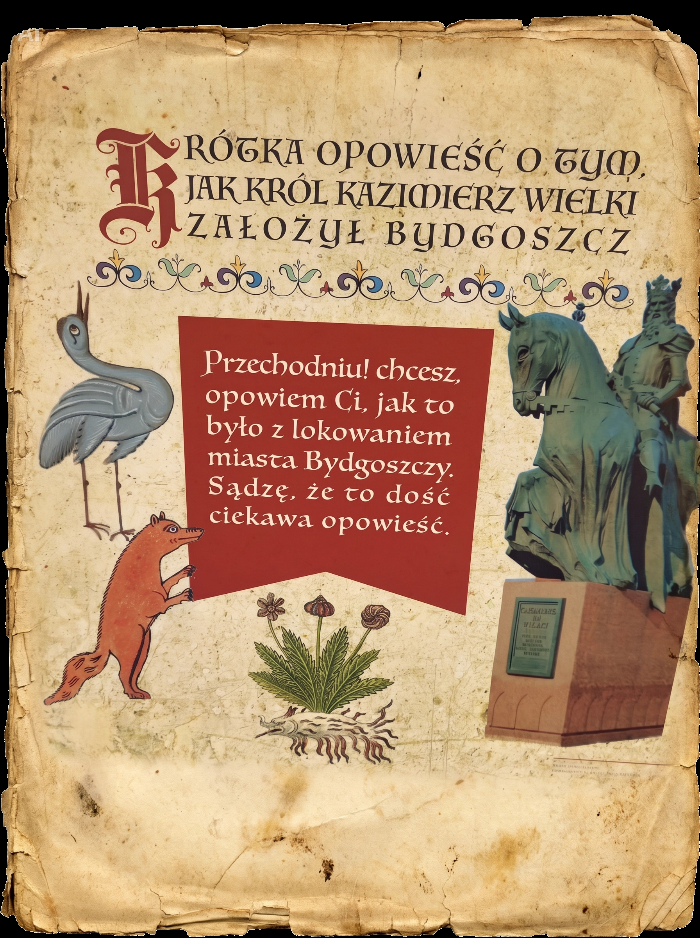
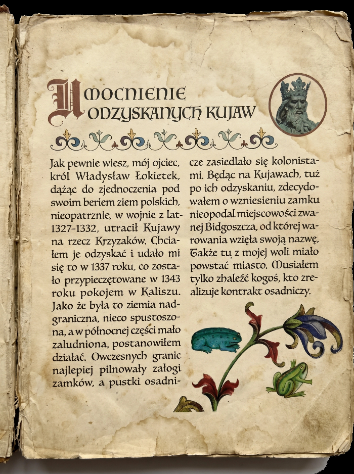
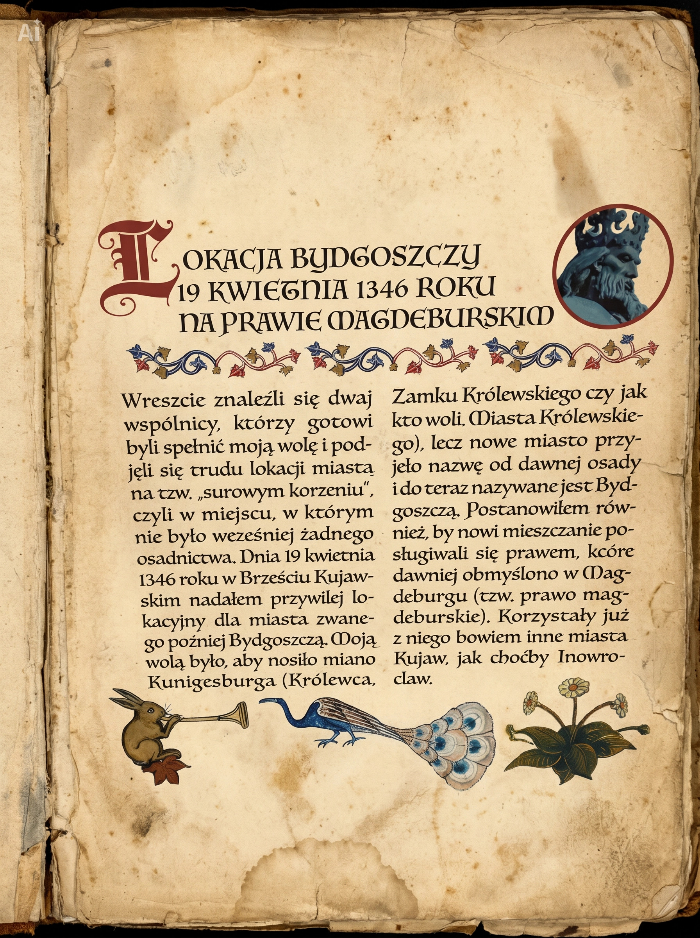
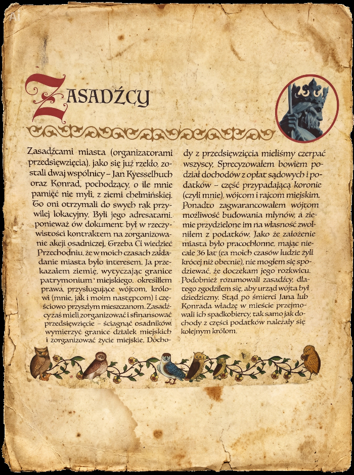
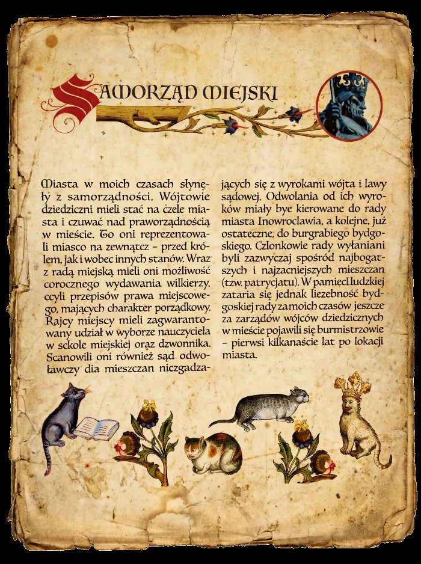
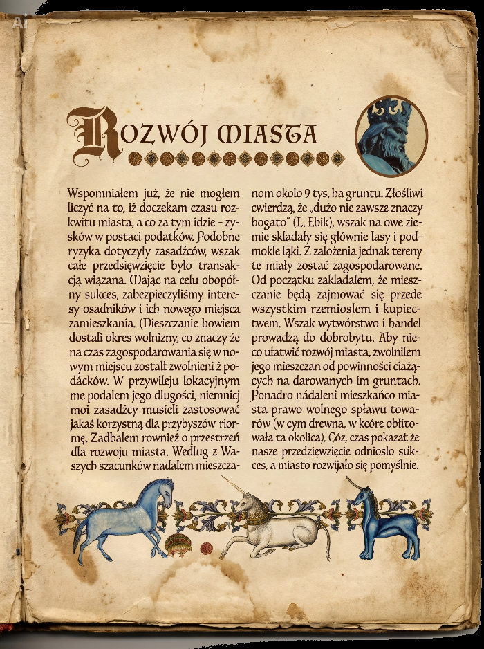

I
Część pierwsza
Powrót Kujaw
Wojna z Zakonem i odzyskanie ziemi nad Brdą.
▷ Oglądaj częśćOpowieść o lokacji miasta nad Brdą, opowiedziana głosem króla — w trzech częściach.
Każda część łączy malowane sceny z głosem Kazimierza Wielkiego i muzyką dworu. Wybierz część lub obejrzyj całość.
Wojna z Zakonem i odzyskanie ziemi nad Brdą.
▷ Oglądaj częśćAkt lokacyjny na prawie magdeburskim.
▷ Oglądaj częśćSamorząd, rzemiosło, handel i dobrobyt.
▷ Oglądaj częśćSześć kart spisanej opowieści. Dotknij karty, aby przeczytać ją z bliska.





